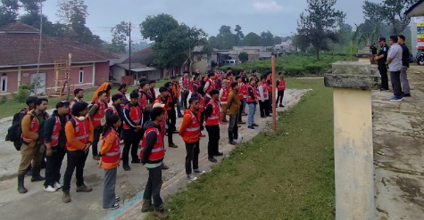

Berita Terkini
Ikuti perkembangan terbaru kegiatan Laboratorium Surta
15 Desember 2024
Pengumuman Asisten Praktikum Lab Surta Semester Genap 2025
Dengan hormat, Laboratorium Surta Teknik Geodesi dengan bangga mengumumkan daftar nama mahasiswa yang telah terpilih sebagai Asisten Praktikum untuk Semester Genap Tahun Akademik 2024/2025.
Pengumuman 10 Desember 2024
Kolaborasi Baru FTSP Itenas di Bidang Geospasial
Fakultas Teknik Sipil dan Perencanaan (FTSP) Itenas resmi menandatangani Memorandum of Agreement (MoA) dengan PT Alat Ukur Indosurta pada 10 September 2025.
kolaborasi

5 Desember 2024
Kemah Geospasial 2025
Teknik Geodesi Itenas Kembali menggelar Kemah Gospasial di Desa Cipada, Kabupaten Bandung Barat, Selama 10 hari penuh, mahasiswa tinggalm berinteraksi, dan bersosialisasi langsung dengan masyarakat desa. Mereka turun langsung untuk mengaplikasikan ilmu lapangan
Kegiatan